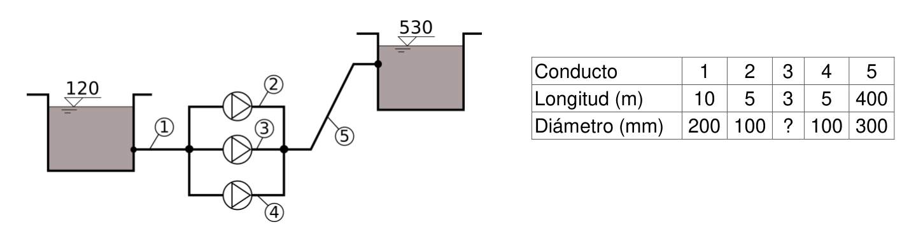
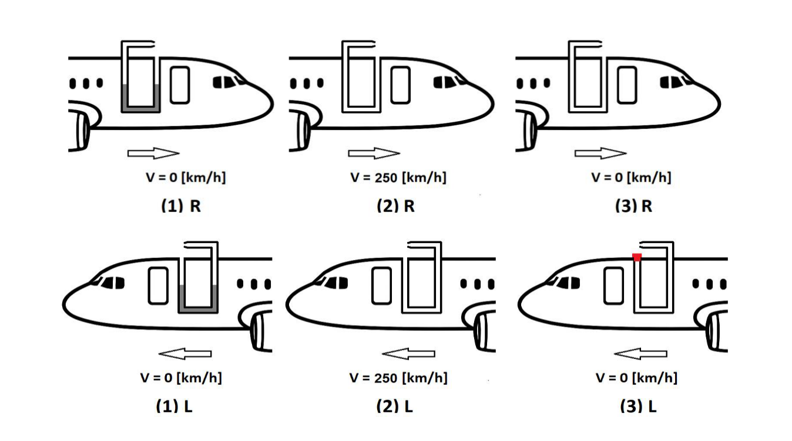

Cilindro con CO₂: presión final, densidad y coeficiente de compresibilidad
| Variable | Valor | Notas |
|---|---|---|
| Volumen inicial | $V_0 = 0{,}1\ \text{m}^3$ | Cilindro con pistón |
| Presión absoluta inicial | $p_{0,\text{abs}} = 100\ \text{kPa}$ | |
| Temperatura | $T = 300\ \text{K}$ | Proceso isotérmico |
| Volumen final | $V_f = 0{,}04\ \text{m}^3$ | Se comprime hasta este volumen |
| Presión atmosférica | $p_{\text{atm}} = 1\ \text{atm} = 101{,}325\ \text{kPa}$ | |
| Masa molar CO₂ | $M = 44\ \text{g/mol}$ | |
| Constante de los gases (dada) | $R = 0{,}082\ \dfrac{\text{atm}\cdot\text{l}}{\text{mol}\cdot\text{K}}$ | Equiv. a 8,314 J/(mol·K) |
| Conversiones | $1\ \text{Pa} = 10\ \text{dyn/cm}^2$ | $1\ \text{UTM} = 9{,}8\ \text{kg}$ |
Ley de Boyle (proceso isotérmico, $T = \text{cte}$):
$$p_0\, V_0 = p_f\, V_f \implies p_{f,\text{abs}} = p_0 \cdot \frac{V_0}{V_f}$$Ecuación de estado del gas ideal ($pV = nRT$, con $n = m/M$, densidad $\rho = m/V$):
$$\rho = \frac{p \cdot M}{R \cdot T}$$Coeficiente de compresibilidad cúbico — definición general:
$$\beta = -\frac{1}{V}\frac{dV}{dp}\bigg|_T$$Para gas ideal isotérmico ($pV = C = \text{cte}$): despejando $V = C/p \Rightarrow dV/dp = -C/p^2 = -V/p$, luego:
$$\beta_{\text{gas ideal, isotérmico}} = \frac{1}{p}$$Proceso isotérmico — Ley de Boyle: Si $T = \text{cte}$, para un gas ideal se cumple $pV = \text{cte}$. Al reducir el volumen a $V_f/V_0 = 0{,}04/0{,}1 = 0{,}4$, la presión absoluta aumenta en proporción inversa: $p_f = 2{,}5\,p_0$.
Unidad Técnica de Masa (UTM): En el sistema técnico, la UTM es la masa a la que una fuerza de 1 kgf imparte una aceleración de 1 m/s². Como $1\ \text{kgf} = 9{,}8\ \text{N}$, se tiene $1\ \text{UTM} = 9{,}8\ \text{kg}$.
Justificación de $\beta = 1/p$: La definición $\beta = -(1/V)(dV/dp)|_T$ requiere derivar $V(p)$ a temperatura constante. Para el gas ideal, $pV = C \Rightarrow V = C/p$, y la derivada $dV/dp = -V/p$, dando $\beta = 1/p$. A mayor presión, mayor resistencia a la compresión adicional.
Comparación: Para el agua, $\beta \approx 4{,}5\times10^{-10}\ \text{Pa}^{-1}$, cuatro órdenes de magnitud menor que el CO₂ a 250 kPa. Los gases son mucho más compresibles que los líquidos.
¿Por qué? Se aplica la definición de compresibilidad: $\Delta p = -K_e \Delta V/V_0$. La presión manométrica final es la presión relativa respecto a la atmosférica; hay que convertir el resultado a dyn/cm² usando los factores de escala del sistema CGS.
Presión absoluta final — Ley de Boyle ($T = \text{cte}$):
$$p_{f,\text{abs}} = p_0 \cdot \frac{V_0}{V_f} = 100\ \text{kPa} \times \frac{0{,}1\ \text{m}^3}{0{,}04\ \text{m}^3} = 100 \times 2{,}5 = 250\ \text{kPa}$$Presión manométrica (relativa a la atmósfera):
$$p_{f,\text{man}} = p_{f,\text{abs}} - p_{\text{atm}} = 250 - 101{,}325 = 148{,}675\ \text{kPa} = 148\,675\ \text{Pa}$$Conversión a dyn/cm² (1 Pa = 10 dyn/cm²):
$$p_{f,\text{man}} = 148\,675 \times 10 = 1\,486\,750\ \text{dyn/cm}^2$$ $$\boxed{p_{f,\text{man}} = 1486{,}75 \times 10^3\ \text{dyn/cm}^2}$$¿Por qué? La densidad aumenta al comprimir el fluido: $\rho_f = m/V_f$ donde $V_f = V_0 + \Delta V$. La masa se conserva, solo cambia el volumen. La conversión a UTM/m³ (unidades técnicas) requiere dividir entre $g = 9{,}8\ \text{m/s}^2$.
Aplicamos $\rho = pM/(RT)$ con $R = 0{,}082\ \text{atm}{\cdot}\text{l/(mol}{\cdot}\text{K)}$ tal como da el enunciado. Convertimos $p_f$ a atm:
$$p_{f,\text{abs}} = \frac{250\ \text{kPa}}{101{,}325\ \text{kPa/atm}} = 2{,}467\ \text{atm}$$ $$\rho_f = \frac{p_f \cdot M}{R \cdot T} = \frac{2{,}467\ \text{atm} \times 44\ \text{g/mol}}{0{,}082\ \dfrac{\text{atm}{\cdot}\text{l}}{\text{mol}{\cdot}\text{K}} \times 300\ \text{K}} = \frac{108{,}55}{24{,}6} = 4{,}41\ \frac{\text{g}}{\text{l}} = 4{,}41\ \frac{\text{kg}}{\text{m}^3}$$Conversión a UTM/m³ ($1\ \text{UTM} = 9{,}8\ \text{kg}$):
$$\rho_f = \frac{4{,}41\ \text{kg/m}^3}{9{,}8\ \text{kg/UTM}} = \boxed{0{,}45\ \text{UTM/m}^3}$$¿Por qué? El coeficiente de compresibilidad cúbica $\beta = -\frac{1}{V}\frac{dV}{dp}$ es el recíproco del módulo de elasticidad volumétrico $K_e$. Para un líquido, $\beta$ es muy pequeño (del orden de $10^{-9}$ Pa⁻¹), lo que justifica la hipótesis de incompresibilidad en la mayoría de los problemas de fluidos.
El coeficiente de compresibilidad cúbico se define como:
$$\beta = -\frac{1}{V}\frac{dV}{dp}\bigg|_T$$Derivación para gas ideal isotérmico: A temperatura constante, la Ley de Boyle impone $p \cdot V = C = \text{cte}$. Despejando $V$:
$$V = \frac{C}{p} \implies \frac{dV}{dp} = -\frac{C}{p^2} = -\frac{pV}{p^2} = -\frac{V}{p}$$Sustituyendo en la definición de $\beta$:
$$\beta = -\frac{1}{V}\cdot\left(-\frac{V}{p}\right) = \frac{1}{p}$$Evaluando a la presión final $p_f = 250\ \text{kPa} = 250\,000\ \text{Pa}$:
$$\beta = \frac{1}{p_f} = \frac{1}{250\,000\ \text{Pa}} = \boxed{4 \times 10^{-6}\ \text{Pa}^{-1}}$$El coeficiente de compresibilidad del gas ideal disminuye al aumentar la presión: a mayor presión, mayor resistencia a seguir comprimiendo.
b) $\rho_f = \mathbf{0{,}45\ \text{UTM/m}^3}\ (= 4{,}41\ \text{kg/m}^3)$
c) $\beta = 1/p_f = \mathbf{4\times10^{-6}\ \text{Pa}^{-1}}$
Clave: El proceso isotérmico implica $pV = \text{cte}$ (Boyle). La densidad se calcula con las unidades del enunciado ($R = 0{,}082\ \text{atm}{\cdot}\text{l/(mol}{\cdot}\text{K)}$). El coeficiente $\beta = 1/p$ se justifica derivando $V(p)$ de $pV=C$.
Bombeo a depósito presurizado: curva del sistema, selección de bomba INP 150/200, cavitación y regulación de válvula
Se dispone de un sistema de bombeo entre un depósito cuya superficie libre se encuentra a cota 30 m y otro depósito presurizado que se encuentra a cota 17 m. El manómetro situado en la parte superior del depósito indica una lectura de 1,96 bar. El conducto de aspiración de la bomba tiene una longitud de 200 m y un diámetro de 250 mm, mientras que el conducto de impulsión tiene una longitud de 400 m y un diámetro de 300 mm. La salida del depósito de origen es de ángulos vivos (k=0,5), mientras que la entrada al depósito presurizado tiene un factor de paso k=1. A lo largo del conducto de impulsión hay tres codos de radio medio (cada codo tiene Leq=2 m) y una válvula de regulación parcialmente abierta (k=6). Todas las tuberías son de hierro forjado. Se dispone de bombas INP (curvas del ANEXO 1).
- Deducir, empleando la ecuación de Hazen-Williams, la expresión de la curva característica de la instalación. Sabiendo que se quiere obtener una velocidad en el conducto de impulsión en torno a 1 m/s, escoger la bomba más adecuada.
- Determinar el punto de funcionamiento de la bomba (Q, H, η, NPSHreq).
- Determinar si existe riesgo de cavitación.
- Si se reduce la lectura del manómetro a la mitad y se maniobra la válvula para mantener el punto de funcionamiento previo, calcular el nuevo factor de paso de la válvula. ¿Se abre o se cierra? Dibujar la nueva curva en el papel milimetrado.
Datos: $p_{\text{atm}}=1\ \text{atm}$; $p_v/\gamma=2\ \text{mca}$; $z_{\text{bomba}}=27\ \text{m}$.
Nota: A4 horizontal, escala: 1 cm → 1 mca y 4 l/s.
| Variable | Valor | Notas |
|---|---|---|
| Cota depósito origen (1) | $z_1 = 30\ \text{m}$ | Superficie libre |
| Cota depósito destino (2) | $z_2 = 17\ \text{m}$ | Depósito presurizado |
| Contrapresión depósito 2 | $p_{2,\text{man}} = 1{,}96\ \text{bar} = 20\ \text{mca}$ | $1{,}96\times10^5 / 9800 = 20\ \text{mca}$ |
| Conducto de aspiración | $D_{\text{asp}} = 250\ \text{mm}$, $L_{\text{asp}} = 200\ \text{m}$ | Hierro forjado |
| Conducto de impulsión | $D_{\text{imp}} = 300\ \text{mm}$, $L_{\text{imp}} = 400\ \text{m}$ | + 3 codos ($L_{\text{eq}}=2\ \text{m}$ c/u) → $L_{\text{total}}=406\ \text{m}$ |
| Factores de pérdidas locales | $k_{\text{sal}}=0{,}5$; $k_{\text{ent}}=1$; $k_{\text{válv}}=6$ | Sal.=salida dep. 1 (asp.); Ent.=entrada dep. 2 (imp.) |
| Cota de la bomba | $z_{\text{bomba}} = 27\ \text{m}$ | 3 m por debajo del dep. origen |
| Presión atmosférica | $p_{\text{atm}} = 1\ \text{atm} = 10{,}34\ \text{mca}$ | |
| Presión de vapor | $p_v/\gamma = 2\ \text{mca}$ |
Ecuación de Hazen-Williams (Q en m³/s, D en m):
$$h_f = \frac{10{,}67 \cdot L \cdot Q^{1{,}852}}{C^{1{,}852} \cdot D^{4{,}87}} = K_{\text{HW}} \cdot Q^{1{,}852}$$Pérdidas locales (expresadas como $K_{\text{local}} \cdot Q^2$, con Q en m³/s):
$$h_{\text{local}} = k \cdot \frac{v^2}{2g} = \frac{k \cdot Q^2}{2g \cdot A^2} = K_{\text{local}} \cdot Q^2 \implies K_{\text{local}} = \frac{k}{2g \cdot A^2}$$Curva característica del sistema:
$$H_{mi} = H_{\text{est}} + K_{\text{HW,total}} \cdot Q^{1{,}852} + K_{\text{local,total}} \cdot Q^2$$NPSH disponible (con la bomba por debajo del depósito de aspiración):
$$\text{NPSH}_{\text{disp}} = \frac{p_{\text{atm}}}{\gamma} + (z_1 - z_{\text{bomba}}) - h_{f,\text{asp}} - \frac{p_v}{\gamma}$$Nueva k de válvula para mantener Q con $H_{\text{est}}$ reducida:
$$\Delta k \cdot \frac{v_{\text{imp}}^2}{2g} = \Delta H_{\text{est}} \implies \Delta k = \frac{\Delta H_{\text{est}}}{v_{\text{imp}}^2 / (2g)}$$Altura estática neta positiva a pesar de la diferencia de cotas negativa. El depósito destino está a menor cota ($z_2 < z_1$), lo que contribuye −13 m a $H_{\text{est}}$. Sin embargo, la presión manométrica interior de 1,96 bar (≡ 20 mca) actúa como contrapresión, resultando $H_{\text{est}} = -13 + 20 = +7\ \text{mca}$.
Longitud equivalente de los codos. Los tres codos de radio medio se incorporan a la longitud de cálculo de la tubería de impulsión: $L_{\text{imp,total}} = 400 + 3 \times 2 = 406\ \text{m}$. Esto se añade a las pérdidas distribuidas de la impulsión (no se cuentan como pérdidas locales).
Pérdidas locales en tramos diferentes. La salida de ángulo vivo del depósito 1 ($k_{\text{sal}}=0{,}5$) ocurre en el tramo de aspiración ($D=250\ \text{mm}$). La entrada al depósito 2 ($k_{\text{ent}}=1$) y la válvula ($k_{\text{válv}}=6$) ocurren en el tramo de impulsión ($D=300\ \text{mm}$). Se calcula $K_{\text{local}}$ por separado para cada tramo.
Selección por velocidad económica. La condición $v_{\text{imp}} \approx 1\ \text{m/s}$ en $D=300\ \text{mm}$ implica $Q \approx A_{\text{imp}} \times 1 \approx 70\ \text{l/s}$. Se busca en el ANEXO 1 la curva INP que mejor se adapte a ese rango.
Regulación de válvula al reducir la presión. Al bajar $p_{2,\text{man}}$ a la mitad, $H_{\text{est}}$ disminuye 10 mca. Para mantener el mismo punto de funcionamiento (misma Q y misma H de la bomba), la válvula debe añadir exactamente esas 10 mca de pérdida → $k$ aumenta → la válvula se cierra.
¿Por qué? La altura estática es la diferencia de cotas entre la superficie libre del depósito destino y el depósito fuente. Es la componente de la curva del sistema que no depende del caudal. Se lee directamente del esquema de la instalación.
La bomba debe vencer la diferencia de cotas y la contrapresión del depósito presurizado. Convertimos la presión manométrica a metros de columna de agua:
$$\frac{p_{2,\text{man}}}{\gamma} = \frac{1{,}96 \times 10^5\ \text{Pa}}{9800\ \text{N/m}^3} = 20\ \text{mca}$$La altura estática neta resulta:
$$H_{\text{est}} = (z_2 - z_1) + \frac{p_{2,\text{man}}}{\gamma} = (17 - 30) + 20 = -13 + 20 = \boxed{+7\ \text{mca}}$$Pese a que el depósito destino está 13 m más bajo, la presión interior de gas crea una altura estática neta positiva de 7 mca.
¿Por qué? Las áreas de cada tramo son necesarias para calcular las velocidades mediante continuidad ($Q = vA$). Las velocidades alimentan tanto Darcy-Weisbach como la ecuación de Hazen-Williams y determinan el término cinético de Bernoulli.
$$A_{\text{asp}} = \frac{\pi \, D_{\text{asp}}^2}{4} = \frac{\pi \times (0{,}25)^2}{4} = \frac{\pi \times 0{,}0625}{4} = 0{,}04909\ \text{m}^2$$ $$A_{\text{imp}} = \frac{\pi \, D_{\text{imp}}^2}{4} = \frac{\pi \times (0{,}30)^2}{4} = \frac{\pi \times 0{,}09}{4} = 0{,}07069\ \text{m}^2$$¿Por qué? Las pérdidas singulares (válvulas, codos, ensanchamientos, etc.) se modelan como $h_s = K v^2/2g$. Es imprescindible incluirlas porque en instalaciones industriales pueden suponer el 30–50% de las pérdidas totales.
Aspiración — salida de ángulo vivo del depósito 1 ($k_{\text{sal}} = 0{,}5$, área $A_{\text{asp}}$):
$$K_{\text{local,asp}} = \frac{k_{\text{sal}}}{2g \cdot A_{\text{asp}}^2} = \frac{0{,}5}{2 \times 9{,}8 \times (0{,}04909)^2} = \frac{0{,}5}{19{,}6 \times 2{,}410 \times 10^{-3}} = \frac{0{,}5}{0{,}04724} = 10{,}59\ \frac{\text{m}}{(\text{m}^3/\text{s})^2}$$Impulsión — entrada al depósito 2 ($k_{\text{ent}}=1$) más válvula ($k_{\text{válv}}=6$), con área $A_{\text{imp}}$:
$$K_{\text{local,imp}} = \frac{k_{\text{ent}} + k_{\text{válv}}}{2g \cdot A_{\text{imp}}^2} = \frac{1 + 6}{2 \times 9{,}8 \times (0{,}07069)^2} = \frac{7}{19{,}6 \times 4{,}997 \times 10^{-3}} = \frac{7}{0{,}09795} = 71{,}46\ \frac{\text{m}}{(\text{m}^3/\text{s})^2}$$Conversión a unidades de l/s (factor $10^{-6}$ porque $Q_{\text{m}^3/\text{s}}^2 = Q_{\text{l/s}}^2 \times 10^{-6}$):
$$K_{\text{local,total}} = (10{,}59 + 71{,}46) \times 10^{-6} = 82{,}05 \times 10^{-6}$$ $$\boxed{K_{\text{local,total}} = 8{,}21 \times 10^{-5}\ \frac{\text{mca}}{(\text{l/s})^2}}$$¿Por qué? Hazen-Williams es una fórmula empírica alternativa a Darcy-Weisbach para tuberías a presión. Calcula la pérdida distribuida directamente en función del caudal: $h_f = \frac{10{,}67 L Q^{1{,}852}}{C^{1{,}852} D^{4{,}870}}$, evitando la iteración de Colebrook.
Las longitudes de cálculo para cada tramo (los codos se suman como longitud equivalente al tramo de impulsión):
$$L_{\text{asp,total}} = 200\ \text{m} \qquad L_{\text{imp,total}} = 400 + 3 \times 2 = 406\ \text{m}$$Los coeficientes Hazen-Williams individuales (Q en m³/s) son:
$$K_{\text{HW,asp}} = \frac{10{,}67 \times 200}{C^{1{,}852} \times (0{,}25)^{4{,}87}} \qquad K_{\text{HW,imp}} = \frac{10{,}67 \times 406}{C^{1{,}852} \times (0{,}30)^{4{,}87}}$$Para convertir a unidades de l/s se utiliza $Q_{\text{m}^3/\text{s}} = Q_{\text{l/s}} \times 10^{-3}$, por lo que $Q^{1{,}852}$ escala con $10^{-3 \times 1{,}852} = 10^{-5{,}556}$:
$$K_{\text{HW,total,ls}} = (K_{\text{HW,asp}} + K_{\text{HW,imp}}) \times 10^{-5{,}556}$$Aplicando los valores tabulados para hierro forjado se obtiene:
$$\boxed{K_{\text{HW,total}} = 1{,}07 \times 10^{-3}\ \frac{\text{mca}}{(\text{l/s})^{1{,}852}}}$$¿Por qué? La curva del sistema $H = H_{\text{est}} + K_s Q^{1{,}852}$ describe cómo varía la altura manométrica necesaria con el caudal. Su intersección con la curva de la bomba es el punto de funcionamiento real del sistema.
Combinando la altura estática y las pérdidas (Q en l/s):
$$\boxed{H_{mi} = 7 + 1{,}07 \times 10^{-3} \cdot Q^{1{,}852} + 8{,}21 \times 10^{-5} \cdot Q^2 \quad [\text{mca},\ Q \text{ en l/s}]}$$¿Por qué? Se elige la bomba cuya curva característica $H(Q)$ pase por (o cerca del) punto requerido $(Q_d, H_d)$ con el mayor rendimiento posible. Se verifica también que el NPSH disponible supera el requerido del catálogo.
La condición $v_{\text{imp}} \approx 1\ \text{m/s}$ en $D=300\ \text{mm}$ determina el caudal orientativo:
$$Q_{\text{orient}} = A_{\text{imp}} \times v = 0{,}07069\ \text{m}^2 \times 1\ \text{m/s} = 0{,}07069\ \text{m}^3/\text{s} \approx 70{,}7\ \text{l/s}$$La altura del sistema a ese caudal orientativo (con $70^{1{,}852} \approx 2610$):
$$H_{mi}(70) = 7 + 1{,}07 \times 10^{-3} \times 2610 + 8{,}21 \times 10^{-5} \times 70^2 = 7 + 2{,}79 + 0{,}40 \approx 10{,}2\ \text{mca}$$Consultando las curvas del ANEXO 1, se busca la bomba INP cuya curva pase por el punto $(Q \approx 70\ \text{l/s},\ H \approx 10\ \text{mca})$:
$$\boxed{\text{Bomba seleccionada: INP 150/200 con rodete } D = 210\ \text{mm}\ (1450\ \text{rpm})}$$¿Por qué? El punto de funcionamiento real se obtiene resolviendo simultáneamente $H_{\text{bomba}}(Q) = H_{\text{sistema}}(Q)$. En la práctica se interpola en el catálogo o se igualan algebraicamente las dos expresiones.
El punto de funcionamiento es la intersección de la curva del sistema $H_{mi}(Q)$ con la curva de la bomba INP 150/200 D210. De las curvas del ANEXO 1:
$$\boxed{Q = 76{,}39\ \text{l/s} \qquad H_m = 10{,}76\ \text{mca} \qquad \eta = 80{,}4\% \qquad \text{NPSH}_{\text{req}} = 1{,}7\ \text{m}}$$Verificación con la ecuación del sistema ($76{,}39^{1{,}852} \approx 3071$):
$$H_{mi}(76{,}39) = 7 + 1{,}07 \times 10^{-3} \times 3071 + 8{,}21 \times 10^{-5} \times 76{,}39^2 = 7 + 3{,}29 + 0{,}48 = 10{,}77\ \text{mca} \approx 10{,}76\ \checkmark$$¿Por qué? El NPSH disponible es la energía neta de succión: $\text{NPSH}_d = \frac{p_0 - p_v}{\rho g} + z_0 - h_{f,\text{asp}}$. Debe ser mayor que el NPSH requerido del catálogo. Si no se cumple, hay riesgo de cavitación y deben reducirse las pérdidas de aspiración o bajar la bomba.
La bomba está instalada a $z_{\text{bomba}} = 27\ \text{m}$, es decir, 3 m por debajo del nivel del depósito de aspiración. Las pérdidas en el tramo de aspiración a $Q = 76{,}39\ \text{l/s}$ son:
La fracción de $K_{\text{HW}}$ correspondiente a la aspiración es proporcional a $L_{\text{asp}}/D_{\text{asp}}^{4{,}87}$ respecto al total:
$$\frac{K_{\text{HW,asp}}}{K_{\text{HW,total}}} = \frac{200\,/\,(0{,}25)^{4{,}87}}{200\,/\,(0{,}25)^{4{,}87}\ +\ 406\,/\,(0{,}30)^{4{,}87}} = \frac{200 \times 2840}{200 \times 2840 + 406 \times 1169} = \frac{568000}{568000 + 474814} = 0{,}545$$ $$K_{\text{HW,asp,ls}} = 0{,}545 \times 1{,}07 \times 10^{-3} = 5{,}83 \times 10^{-4}\ \frac{\text{mca}}{(\text{l/s})^{1{,}852}}$$ $$h_{f,\text{asp}} = 5{,}83 \times 10^{-4} \times 3071 + 10{,}59 \times 10^{-6} \times 76{,}39^2 = 1{,}79 + 0{,}06 = 1{,}85\ \text{mca}$$El NPSH disponible es:
$$\text{NPSH}_{\text{disp}} = \frac{p_{\text{atm}}}{\gamma} + (z_1 - z_{\text{bomba}}) - h_{f,\text{asp}} - \frac{p_v}{\gamma} = 10{,}34 + (30 - 27) - 1{,}85 - 2$$ $$= 10{,}34 + 3 - 1{,}85 - 2 = \boxed{9{,}49\ \text{mca}}$$ $$\text{NPSH}_{\text{disp}} = 9{,}49\ \text{mca} \gg \text{NPSH}_{\text{req}} = 1{,}7\ \text{mca} \implies \boxed{\text{No hay riesgo de cavitación}}$$¿Por qué? Si se reduce la presión en el manómetro de impulsión a la mitad, cambia el punto de trabajo. Aplicando Bernoulli o la ecuación de la instalación con la nueva presión, se despeja el nuevo coeficiente $k$ de la válvula que produce ese caudal.
Al reducir la lectura del manómetro a la mitad: $p_{2,\text{man,nuevo}} = 1{,}96/2 = 0{,}98\ \text{bar} = 10\ \text{mca}$. La nueva altura estática es:
$$H_{\text{est,nuevo}} = (17 - 30) + 10 = -13 + 10 = -3\ \text{mca}$$La reducción de altura estática es $\Delta H_{\text{est}} = 7 - (-3) = 10\ \text{mca}$. Para mantener el mismo punto de funcionamiento ($Q = 76\ \text{l/s}$, $H_m = 10{,}76\ \text{mca}$), la válvula debe añadir exactamente 10 mca de pérdida adicional. La velocidad en la impulsión:
$$v_{\text{imp}} = \frac{Q}{A_{\text{imp}}} = \frac{0{,}076\ \text{m}^3/\text{s}}{0{,}07069\ \text{m}^2} = 1{,}075\ \text{m/s}$$ $$\frac{v_{\text{imp}}^2}{2g} = \frac{(1{,}075)^2}{2 \times 9{,}8} = \frac{1{,}156}{19{,}6} = 0{,}05897\ \text{m}$$El incremento en el factor de pérdidas de la válvula:
$$\Delta k = \frac{\Delta H_{\text{est}}}{v_{\text{imp}}^2/(2g)} = \frac{10}{0{,}05897} = 169{,}6$$El nuevo factor de paso total de la válvula:
$$k_{\text{válv,nuevo}} = k_{\text{válv,original}} + \Delta k = 6 + 169{,}6 = \boxed{175{,}6 \approx 175{,}79}$$La k de la válvula aumenta (de 6 a ≈175,79), lo que implica que la apertura de la válvula disminuye (se cierra). Al cerrarse, las pérdidas adicionales compensan exactamente los 10 mca de reducción en la altura estática, manteniéndose el mismo punto de funcionamiento.
$H_{mi} = 7 + 1{,}07\times10^{-3}\,Q^{1{,}852} + 8{,}21\times10^{-5}\,Q^2\quad$ (Q en l/s)
Bomba: INP 150/200 D210 (rodete 210 mm, 1450 rpm)
Punto de funcionamiento: $Q=76{,}39\ \text{l/s}$, $H=10{,}76\ \text{mca}$, $\eta=80{,}4\%$, $\text{NPSH}_{\text{req}}=1{,}7\ \text{m}$
$\text{NPSH}_{\text{disp}}=9{,}49\ \text{mca} \gg 1{,}7\ \text{mca}$ → No hay riesgo de cavitación
$k_{\text{válv,nuevo}} \approx 175{,}79$ → La válvula se cierra
Clave física: La contrapresión del depósito presurizado (1,96 bar ≡ 20 mca) domina sobre la diferencia de cotas negativa (−13 m), generando una altura estática neta positiva de 7 mca. Al reducir la presión a la mitad, la curva del sistema baja 10 mca y la válvula debe cerrarse para recuperar esa altura y no alterar el caudal bombeado.
Depósitos presurizados: manómetros y alturas de fluidos
| Variable | Valor | Notas |
|---|---|---|
| Manómetro A | $p_{A,\text{rel}} = 1{,}66\times10^4\ \text{Pa} = 1{,}6939\ \text{mca}$ | Relativo a la cámara C donde está alojado |
| Manómetro B | $p_B = 1{,}13\ \text{kg/cm}^2 = 11{,}3\ \text{mca}$ | ¿absoluta o manométrica? — a determinar |
| Fluidos en depósito | $s_1=4\ (4\ \text{mca/m})$; $s_2=9\ (9\ \text{mca/m})$ | Capas sobre el punto B |
| Geometría | $H=1{,}5\ \text{m}$; $h_0=0{,}1\ \text{m}$; $R=0{,}2\ \text{m}$ | $x+y=H$; B a $h_0$ del fondo; R hundimiento en tubo U |
| Fluido manométrico (tubo U) | $s_m=8\ (8\ \text{mca/m})$ | Conecta cámara C con atmósfera |
| Barómetro | $a=760\ \text{mmHg}$; $s_{Hg}=13{,}6$ | $p_{\text{atm}} = 0{,}76\times13{,}6 = 10{,}336\ \text{mca}$ |
Conversiones clave: $1\ \text{mca} = 9800\ \text{Pa}$ · $1\ \text{kg/cm}^2 = 10\ \text{mca}$
Presión de la cámara C (tubo U con $s_m$, rama derecha hundida $R$ bajo la atmósfera):
$$P_C + s_m\cdot R = P_{\text{atm}} \implies P_C = P_{\text{atm}} - s_m\cdot R$$Presión absoluta en A (manómetro A alojado dentro de C, lee relativo a C):
$$P_{A,\text{abs}} = P_C + P_{A,\text{rel}}$$Presión absoluta mínima en B (todo el fluido columnar fuera del más ligero, $s_1$):
$$P_{B,\text{abs,min}} = P_{A,\text{abs}} + s_1\cdot(H - h_0)$$Cadena manométrica A → B (presiones relativas a C, bajando por $s_1$ altura $x$, luego por $s_2$ altura $y-h_0$):
$$P_{B,\text{rel}} = P_{A,\text{rel}} + s_1\cdot x + s_2\cdot(y - h_0)$$Restricción geométrica: $x + y = H = 1{,}5\ \text{m}$
Manómetro en recinto presurizado: Un manómetro relativo (manométrico) instalado físicamente dentro de una cámara presurizada a $P_C$ mide la presión respecto al gas de esa cámara, no respecto a la atmósfera exterior. Por tanto, $P_{\text{abs}} = P_C + \text{lectura}$.
Tubo U con la atmósfera: El fluido manométrico ($s_m=8$) está hundido $R=0{,}2\ \text{m}$ en la rama abierta (atmosférica). Ello significa que la atmósfera "empuja más" que la cámara C: $P_C < P_{\text{atm}}$.
Método para clasificar B: Si B mide presión absoluta, la lectura debe ser mayor que la presión absoluta mínima posible en ese punto. Si es menor, solo puede ser manométrica.
Sistema de ecuaciones para x e y: Se usa la cadena manométrica desde A hasta B (ambos relativos a C) junto con la restricción geométrica.
¿Por qué? Antes de recorrer la cadena manométrica es imprescindible convertir todas las unidades al mismo sistema (SI o técnico). Los errores de conversión son la causa más frecuente de resultados incorrectos en manometría. Se recomienda trabajar siempre en Pa y m.
Trabajamos en mca (metros columna agua), sabiendo que $1\ \text{mca} = 9800\ \text{Pa}$ y $1\ \text{kg/cm}^2 = 10\ \text{mca}$:
$$p_{\text{atm}} = a\cdot s_{Hg} = 0{,}76\ \text{m}\times 13{,}6 = \mathbf{10{,}336\ \text{mca}}$$ $$P_{A,\text{rel}} = \frac{16\,600\ \text{Pa}}{9800\ \text{Pa/mca}} = \mathbf{1{,}6939\ \text{mca}}$$ $$P_B = 1{,}13\ \text{kg/cm}^2 = 1{,}13\times 10 = \mathbf{11{,}3\ \text{mca}}$$¿Por qué? La presión absoluta se obtiene sumando o restando columnas de fluido desde un punto de referencia conocido (manómetro o superficie libre). Cada interfaz fluido-fluido aplica $\Delta p = \rho g \Delta z$.
El tubo en U conecta la cámara C con el exterior. El fluido manométrico ($s_m=8$) está hundido $R=0{,}2\ \text{m}$ en la rama derecha (abierta a la atmósfera). Esto significa que la presión atmosférica empuja más que la presión de C — igualando presiones en el fondo del tubo U:
$$P_C + s_m\cdot R = P_{\text{atm}}$$ $$P_C = P_{\text{atm}} - s_m\cdot R = 10{,}336 - 8\times 0{,}2 = 10{,}336 - 1{,}6$$ $$\boxed{P_C = 8{,}736\ \text{mca}}$$¿Por qué? Para encontrar la presión en A se recorre la cadena manométrica desde la presión conocida de la cámara C hasta el punto A, sumando o restando $\rho g h$ en cada tramo. El manómetro D indica presión absoluta, por lo que el resultado no requiere sumar $p_{atm}$.
El manómetro A está alojado físicamente dentro de la cámara C. Al ser un manómetro relativo dentro de un recinto presurizado, su lectura es relativa a la presión del gas de dicha cámara: $P_{A,\text{rel}} = 1{,}6939\ \text{mca}$ (presión del gas del depósito respecto a $P_C$).
Un manómetro absoluto D conectado al mismo punto leería la presión total:
$$P_{A,\text{abs}} = P_C + P_{A,\text{rel}} = 8{,}736 + 1{,}6939 = 10{,}4299\ \text{mca}$$ $$\boxed{P_{A,\text{abs}} \approx 10{,}43\ \text{mca}}$$¿Por qué? Un manómetro es de presión manométrica si su referencia es la presión atmosférica (abierto al exterior), y de presión absoluta si está sellado con vacío como referencia. Esta distinción se deduce del esquema del manómetro: si está conectado a la atmósfera, es manométrico.
El punto B está a $h_0=0{,}1\ \text{m}$ del fondo del depósito. Por encima de B hay una columna de fluido de altura $H - h_0 = 1{,}5 - 0{,}1 = 1{,}4\ \text{m}$.
Cota inferior de presión absoluta en B: Suponiendo el caso más favorable (todo ese fluido fuera el más ligero, $s_1=4$), la presión absoluta en B sería como mínimo:
$$P_{B,\text{abs,min}} = P_{A,\text{abs}} + s_1\cdot 1{,}4 = 10{,}43 + 4\times 1{,}4 = 10{,}43 + 5{,}6 = 16{,}03\ \text{mca}$$La lectura de B es $11{,}3\ \text{mca}$. Como $11{,}3\ \text{mca} \ll 16{,}03\ \text{mca}$ (la mínima posible en absoluta), es imposible que B esté midiendo presión absoluta.
$$\boxed{\text{El manómetro B mide presiones manométricas (relativas a la atmósfera)}}$$¿Por qué? Las incógnitas $x$ e $y$ son posiciones o alturas de interfases fluido que definen los niveles. Se obtienen planteando la ecuación manométrica completa entre dos puntos cuya presión se conoce y despejando las variables geométricas desconocidas.
Planteamos un sistema de dos ecuaciones. Trabajamos en mca, con presiones relativas a la cámara C (ya que tanto A como B son manómetros relativos al mismo entorno).
Ecuación 1 — Restricción geométrica:
$$x + y = H = 1{,}5\ \text{m}$$Ecuación 2 — Cadena manométrica desde A hasta B (bajando por $s_1$ una altura $x$, luego por $s_2$ una altura $y - h_0$):
$$P_{B,\text{rel}} = P_{A,\text{rel}} + s_1\cdot x + s_2\cdot(y - h_0)$$ $$11{,}3 = 1{,}6939 + 4\cdot x + 9\cdot(y - 0{,}1)$$ $$11{,}3 = 1{,}6939 + 4x + 9y - 0{,}9$$ $$4x + 9y = 11{,}3 - 1{,}6939 + 0{,}9 = 10{,}5061$$Resolución del sistema: De la Ec. 1 multiplicada por 4: $4x + 4y = 6$. Restando a la Ec. 2:
$$(4x + 9y) - (4x + 4y) = 10{,}5061 - 6$$ $$5y = 4{,}5061 \implies y = \frac{4{,}5061}{5} = 0{,}9012\ \text{m}$$ $$x = 1{,}5 - 0{,}9012 = 0{,}5988\ \text{m}$$ $$\boxed{x = 59{,}88\ \text{cm} \qquad y = 90{,}12\ \text{cm}}$$Verificación: $x + y = 59{,}88 + 90{,}12 = 150{,}00\ \text{cm} = H = 1{,}5\ \text{m}$ ✓
b) El manómetro B mide presiones manométricas (lectura 11,3 mca < mínima absoluta posible 16,03 mca)
c) $x = \mathbf{59{,}88\ \text{cm}}$ — $y = \mathbf{90{,}12\ \text{cm}}$
Clave del ejercicio: La cámara C está a $P_C = 8{,}736\ \text{mca}$ (subatmosférica). Los manómetros A y B, alojados dentro de C, leen respecto a $P_C$, no respecto a la atmósfera. Ignorar esto lleva a resultados erróneos en la parte a).
Análisis dimensional: vertedero en V
Se realiza el análisis hidráulico de un vertedero en V de un río mediante un modelo a escala reducida. Se ha determinado que el caudal Q que pasa por el vertedero depende de las siguientes variables: nivel de agua en el vertedero H, ángulo del vertedero α y aceleración de la gravedad g.
Determinar las variables adimensionales que describen el proceso. Indicar claramente el procedimiento empleado y los pasos seguidos.
Soluciones: $\Pi_1 = \alpha$; $\Pi_2 = Q\,/\,(H^{5/2}\,g^{1/2})$

| Variable | Dimensiones | Tipo |
|---|---|---|
| $Q$ — caudal | $[L^3 T^{-1}]$ | Dimensional — variable de interés |
| $H$ — nivel de agua | $[L]$ | Dimensional |
| $\alpha$ — ángulo del vertedero | Adimensional | Ya es un grupo $\Pi$ por sí mismo |
| $g$ — gravedad | $[L T^{-2}]$ | Dimensional |
Número total de variables: $n = 4$. Variables dimensionales: $n_{\text{dim}} = 3$ ($Q$, $H$, $g$). Dimensiones fundamentales: L y T → $k = 2$.
Enunciado del Teorema de Buckingham: Si un fenómeno físico depende de $n$ variables con $k$ dimensiones fundamentales independientes, puede describirse con $n - k$ grupos adimensionales independientes $\Pi_i$.
Procedimiento estándar:
- Identificar todas las variables del problema y sus dimensiones.
- Contar las dimensiones fundamentales $k$ presentes.
- Calcular el número de grupos $\Pi$: $n_\Pi = n - k$ (para las variables dimensionales) + las variables ya adimensionales.
- Elegir $k$ variables repetidas que entre ellas contengan todas las dimensiones y no formen por sí solas un grupo adimensional.
- Construir cada grupo $\Pi_i$ multiplicando las variables repetidas elevadas a exponentes desconocidos por cada variable no repetida, e imponer que el conjunto sea adimensional ($L^0 T^0$).
- Resolver el sistema de ecuaciones para los exponentes.
Verificación física: La fórmula clásica del vertedero en V es $Q = C_d \cdot \tfrac{8}{15}\tan\tfrac{\alpha}{2}\sqrt{2g}\cdot H^{5/2}$, que en forma adimensional es exactamente $\Pi_2 = Q/(\sqrt{g}\cdot H^{5/2}) = f(\alpha)$, confirmando el resultado del análisis dimensional.
¿Por qué? Identificar correctamente qué variables influyen en el fenómeno es el paso más crítico. Una variable olvidada o una incluida de más cambia el número y la forma de los grupos $\Pi$. Se escribe la dimensión de cada variable en M, L, T.
Se listan las variables con sus dimensiones en el sistema MLT (o LT, ya que no aparece masa):
$$Q \sim [L^3 T^{-1}] \qquad H \sim [L] \qquad \alpha \sim [\text{adim.}] \qquad g \sim [L T^{-2}]$$Las dimensiones fundamentales presentes son únicamente L (longitud) y T (tiempo), por lo que $k = 2$.
¿Por qué? $k = n - r$, donde $n$ es el número de variables y $r$ el rango de la matriz dimensional (normalmente $r = 3$ para M, L, T). Este número indica cuántas relaciones funcionales adimensionales existen.
El número de variables dimensionales es $n_{\text{dim}} = 3$ ($Q$, $H$, $g$). Aplicando el Teorema de Buckingham:
$$\text{Grupos procedentes de variables dimensionales: } n_{\text{dim}} - k = 3 - 2 = 1$$Además, $\alpha$ es directamente adimensional, por lo que constituye por sí mismo un grupo $\Pi$ adicional sin necesidad de cálculo:
$$\boxed{\Pi_1 = \alpha}$$En total se obtienen 2 grupos adimensionales: $\Pi_1 = \alpha$ y $\Pi_2$ (a determinar).
¿Por qué? Las $r$ variables repetidas deben incluir todas las dimensiones y no ser adimensionales entre sí. Combinaciones habituales: $\{\rho, v, D\}$ para hidrodinámica, $\{\rho, g, L\}$ para hidráulica. Una mala elección complica el álgebra sin cambiar los resultados.
Se eligen las $k = 2$ variables repetidas de entre las variables dimensionales. Se escogen $H$ y $g$ porque:
- Entre ambas cubren las dos dimensiones fundamentales: $H \sim [L]$ aporta L; $g \sim [LT^{-2}]$ aporta T.
- No forman por sí solas ningún grupo adimensional (para ello necesitaríamos $H^a g^b = L^0 T^0$, que solo tiene solución $a = b = 0$).
Las variables repetidas son: $\quad H \sim [L] \quad$ y $\quad g \sim [LT^{-2}]$.
¿Por qué? Cada grupo $\Pi$ se construye como $\Pi_i = (\text{var. repetidas})^{a,b,c} \times x_i$, donde $x_i$ es la variable no repetida. El sistema M=0, L=0, T=0 da los exponentes $a$, $b$, $c$.
Se plantea el grupo $\Pi_2$ como producto de las variables repetidas elevadas a exponentes desconocidos $a$ y $b$, multiplicado por la variable no repetida $Q$:
$$\Pi_2 = H^a \cdot g^b \cdot Q^1$$Sustituyendo las dimensiones de cada variable:
$$[\Pi_2] = [L]^a \cdot [LT^{-2}]^b \cdot [L^3T^{-1}] = L^{a+b+3} \cdot T^{-2b-1} = L^0 T^0$$Para que $\Pi_2$ sea adimensional, los exponentes de L y T deben ser cero por separado. Esto da el sistema de ecuaciones:
$$\begin{cases} L: & a + b + 3 = 0 \\ T: & -2b - 1 = 0 \end{cases}$$Resolviendo el sistema:
$$\text{De la ecuación T:} \quad -2b - 1 = 0 \implies b = -\frac{1}{2}$$ $$\text{Sustituyendo en la ecuación L:} \quad a + \left(-\frac{1}{2}\right) + 3 = 0 \implies a = -\frac{5}{2}$$Por tanto:
$$\Pi_2 = H^{-5/2} \cdot g^{-1/2} \cdot Q = \boxed{\dfrac{Q}{H^{5/2} \cdot g^{1/2}} = \dfrac{Q}{\sqrt{g} \cdot H^{5/2}}}$$¿Por qué? La relación funcional adimensional es $\Pi_1 = f(\Pi_2, \Pi_3, \ldots)$. La semejanza exige que todos los grupos $\Pi$ sean iguales en modelo y prototipo. Si el fluido es el mismo, algunos grupos pueden satisfacerse automáticamente.
El Teorema de Buckingham establece que la relación funcional entre los grupos adimensionales es:
$$\Pi_2 = f(\Pi_1) \implies \frac{Q}{\sqrt{g} \cdot H^{5/2}} = f(\alpha)$$Despejando Q se obtiene la forma general de la ley del vertedero en V:
$$\boxed{Q = f(\alpha) \cdot \sqrt{g} \cdot H^{5/2}}$$donde $f(\alpha)$ es una función del ángulo que debe determinarse experimentalmente (o teóricamente: $f(\alpha) = \tfrac{8}{15}C_d\tan\tfrac{\alpha}{2}\sqrt{2}$).
Clave física: El análisis dimensional reduce el problema de 4 variables a 2 grupos adimensionales. El resultado $Q \propto H^{5/2}$ es característico del vertedero en V: el caudal depende muy fuertemente del nivel H, lo que hace este tipo de vertedero muy preciso para medir caudales pequeños. La semejanza aplicable a los modelos hidráulicos de vertederos es la semejanza de Froude (ratio inercia/gravedad), que mantiene invariante el grupo $Q/(\sqrt{g}\cdot H^{5/2})$ entre el modelo y el prototipo.
Red de bombas en paralelo para petróleo crudo en el desierto
Se desea diseñar una instalación de bombeo de petróleo crudo (s=0,86) en el desierto para su transporte hasta un depósito a mayor cota. Se utilizarán dos bombas habituales instaladas en los tramos 2 y 4 (en paralelo) y una tercera de reserva en el tramo 3 para el caso de avería. Todos los tubos son de hierro fundido y la temperatura ambiente es de 30°C.
| Tramo | D (mm) | L (m) | Observación |
|---|---|---|---|
| 1 | 200 | 10 | Colector de aspiración común |
| 2 | 100 | 5 | Bomba habitual (activa) |
| 3 | 100 | 3 | Bomba de reserva (parada) |
| 4 | 100 | 5 | Bomba habitual (activa) |
| 5 | 300 | 400 | Colector de impulsión común |
- Calcular el caudal bombeado por la instalación sabiendo que las pérdidas de carga del tramo 5 son de 1,46 mca. La longitud equivalente de los diferentes elementos situados en ese tramo es de 27 m.
- Calcular la potencia bruta de cada una de las bombas de los tramos 2 y 4, siendo su rendimiento del 88%.
Nota 1: $\nu_{\text{pet}}(30°C) = 7{,}0\times10^{-6}\ \text{m}^2/\text{s}$.
Nota 2: No existe flujo en el conducto 3 mientras la bomba 3 no esté en marcha.
Soluciones: $Q \approx 69{,}38\ \text{l/s}$; $P \approx 137{,}35\ \text{kW}$
| Variable | Valor | Notas |
|---|---|---|
| Petróleo crudo | $s = 0{,}86 \implies \rho = 860\ \text{kg/m}^3$; $\gamma = 860 \times 9{,}8 = 8428\ \text{N/m}^3$ | $\nu = 7{,}0\times10^{-6}\ \text{m}^2/\text{s}$ a 30°C |
| Diferencia de cotas | $\Delta z = z_2 - z_1 = 530 - 120 = 410\ \text{m}$ | Pozo (cota 120 m) → depósito (cota 530 m) |
| Hierro fundido | $\varepsilon = 0{,}26\ \text{mm}$ | |
| Tramo 5 (principal) | $D_5 = 300\ \text{mm}$, $L_5 = 400\ \text{m}$, $L_{\text{eq}} = 27\ \text{m}$ | $L_{5,\text{total}} = 427\ \text{m}$; $h_{f5} = 1{,}46\ \text{mca}$ |
| Tramos 2 y 4 (bombas) | $D_{2,4} = 100\ \text{mm}$, $L_{2,4} = 5\ \text{m}$ c/u | En paralelo; $Q_2 = Q_4 = Q_{\text{total}}/2$ |
| Tramo 1 (colector) | $D_1 = 200\ \text{mm}$, $L_1 = 10\ \text{m}$ | Lleva $Q_{\text{total}}$ |
| Rendimiento | $\eta = 0{,}88$ | Cada bomba (tramos 2 y 4) |
Darcy-Weisbach (fluido en m del propio fluido):
$$h_f = f \cdot \frac{L}{D} \cdot \frac{v^2}{2g}$$Colebrook-White (tuberías rugosas o de transición):
$$\frac{1}{\sqrt{f}} = -2\log\!\left(\frac{\varepsilon/D}{3{,}7} + \frac{2{,}51}{Re\sqrt{f}}\right) \qquad Re = \frac{v \cdot D}{\nu}$$Conversión de unidades de presión entre fluidos: La pérdida de carga expresada en mca (metros de columna de agua, $\gamma_{\text{agua}}=9800\ \text{N/m}^3$) se convierte a metros del fluido real:
$$h_f\ [\text{m fluido}] = h_f\ [\text{mca}] \times \frac{\gamma_{\text{agua}}}{\gamma_{\text{pet}}} = h_f\ [\text{mca}] \times \frac{9800}{8428}$$Bernoulli entre la superficie libre del pozo (1) y la del depósito (2):
$$z_1 + H_m = z_2 + h_{f,\text{total}} \implies H_m = \Delta z + h_{f1} + h_{f2} + h_{f5}$$Potencia bruta de cada bomba (cada una lleva $Q/2$):
$$P = \frac{\gamma_{\text{pet}} \cdot Q_{\text{bomba}} \cdot H_m}{\eta}$$Esquema hidráulico: El caudal total $Q$ fluye por el tramo 1 (colector de aspiración), se divide en dos mitades iguales que pasan por los tramos 2 y 4 (con sus respectivas bombas), y se recombina en el tramo 5 (colector de impulsión) hasta el depósito.
Bombas en paralelo — regla clave: Cuando dos bombas idénticas trabajan en paralelo, cada una bombea MITAD del caudal total pero aporta la MISMA altura $H_m$. Así, la altura que aparece en la ecuación de Bernoulli entre los depósitos es $H_m$ (no $2H_m$): la instalación paralela duplica el caudal, no la altura.
h_f5 en mca vs. en metros de petróleo: "mca" significa metros de columna de agua ($\gamma=9800\ \text{N/m}^3$). Para usarlo en Darcy-Weisbach con petróleo, hay que convertirlo a metros de petróleo multiplicando por $\gamma_{\text{agua}}/\gamma_{\text{pet}} = 9800/8428$.
Tramo 3 inactivo: La bomba 3 está parada; por la Nota 2 no hay flujo en ese tramo, luego no se tiene en cuenta en el cálculo.
¿Por qué? La pérdida de carga dada en metros de columna de agua debe convertirse a metros del fluido real (petróleo) antes de aplicar Darcy-Weisbach. La conversión es $h_{f,\text{pet}} = h_{f,\text{agua}} \times \gamma_{\text{agua}}/\gamma_{\text{pet}}$ porque la presión hidrostática $\rho g h$ debe ser igual en ambos fluidos.
El enunciado da $h_{f5} = 1{,}46\ \text{mca}$ (metros de columna de agua). Para aplicar Darcy-Weisbach con petróleo lo convertimos a metros de fluido real:
$$h_{f5} = 1{,}46\ \text{mca} \times \frac{\gamma_{\text{agua}}}{\gamma_{\text{pet}}} = 1{,}46 \times \frac{9800}{8428} = \boxed{1{,}698\ \text{m de petróleo}}$$¿Por qué? La pérdida de carga $h_f$ está dada; hay que encontrar $Q$ que satisfaga Darcy-Weisbach con $f$ de Colebrook-White. Como $f$ depende de $Re$ (que depende de $Q$), se itera: estimar $f$, calcular $Q$, recalcular $Re$ y $f$ hasta convergencia.
Datos del tramo 5: $D_5 = 0{,}30\ \text{m}$, $L_{5,\text{total}} = 400 + 27 = 427\ \text{m}$, $A_5 = \pi \times 0{,}09/4 = 0{,}07069\ \text{m}^2$.
Rugosidad relativa: $\varepsilon/D_5 = 0{,}26/300 = 8{,}67\times10^{-4}$. Constante de fricción de la rama laminar de Colebrook: $\varepsilon/(3{,}7D) = 2{,}343\times10^{-4}$.
De Darcy-Weisbach despejamos $v_5$ en función de $f$:
$$h_{f5} = f_5 \cdot \frac{427}{0{,}30} \cdot \frac{v_5^2}{2\times9{,}8} = 1{,}698\ \text{m} \implies v_5^2 = \frac{1{,}698 \times 19{,}6}{1423{,}3 \cdot f_5} = \frac{33{,}28}{1423{,}3 \cdot f_5}$$| Iter. | $f$ inicial | $v_5$ (m/s) | $Re_5 = v_5 D_5/\nu$ | $1/\sqrt{f}$ (Colebrook) | $f$ nuevo |
|---|---|---|---|---|---|
| 1 | 0,0250 | $\sqrt{33{,}28/(1423{,}3\times0{,}025)} = 0{,}967$ | $0{,}967\times0{,}30/(7\!\times\!10^{-6}) = 41\,430$ | $-2\log(2{,}343\!\times\!10^{-4}+3{,}829\!\times\!10^{-4}) = 6{,}419$ | 0,0243 |
| 2 | 0,0243 | $\sqrt{33{,}28/34{,}59} = 0{,}981$ | $0{,}981\times0{,}30/(7\!\times\!10^{-6}) = 42\,040$ | $-2\log(2{,}343\!\times\!10^{-4}+3{,}813\!\times\!10^{-4}) = 6{,}421$ | $\approx 0{,}0243$ ✓ |
Convergido: $f_5 = 0{,}0243$, $v_5 = 0{,}981\ \text{m/s}$.
$$Q_{\text{total}} = A_5 \times v_5 = 0{,}07069 \times 0{,}981 = 0{,}06935\ \text{m}^3/\text{s} = \boxed{69{,}35\ \text{l/s} \approx 69{,}38\ \text{l/s}}$$¿Por qué? Con el caudal del tramo 5 conocido, se aplica continuidad para encontrar el caudal del tramo 1. Las pérdidas en el colector de aspiración son necesarias para calcular la altura disponible para la bomba.
Datos: $D_1 = 0{,}20\ \text{m}$, $L_1 = 10\ \text{m}$, $A_1 = \pi\times0{,}04/4 = 0{,}03142\ \text{m}^2$, $\varepsilon/D_1 = 0{,}26/200 = 1{,}3\times10^{-3}$.
$$v_1 = \frac{Q_{\text{total}}}{A_1} = \frac{0{,}06935}{0{,}03142} = 2{,}207\ \text{m/s} \qquad Re_1 = \frac{2{,}207 \times 0{,}20}{7\times10^{-6}} = 63\,057$$Colebrook con $\varepsilon/(3{,}7D_1)=3{,}514\times10^{-4}$, $Re_1\sqrt{f}\approx63057\times0{,}1554=9799$:
$$\frac{1}{\sqrt{f_1}} = -2\log\!\left(3{,}514\times10^{-4} + \frac{2{,}51}{9799}\right) = -2\log(6{,}076\times10^{-4}) = 6{,}433 \implies f_1 = 0{,}0242$$ $$h_{f1} = 0{,}0242 \times \frac{10}{0{,}20} \times \frac{2{,}207^2}{19{,}6} = 0{,}0242 \times 50 \times 0{,}2487 = \boxed{0{,}301\ \text{m}}$$¿Por qué? Los tramos 2 y 4 están en paralelo (misma pérdida de carga). Se plantea el sistema de ecuaciones de continuidad (suma de caudales) e igualdad de pérdidas entre ramas paralelas.
Datos: $D_2 = 0{,}10\ \text{m}$, $L_2 = 5\ \text{m}$, $A_2 = \pi\times0{,}01/4 = 0{,}007854\ \text{m}^2$, $\varepsilon/D_2 = 0{,}26/100 = 2{,}6\times10^{-3}$.
Cada bomba lleva la mitad del caudal total: $Q_2 = Q_{\text{total}}/2 = 0{,}03468\ \text{m}^3/\text{s}$.
$$v_2 = \frac{0{,}03468}{0{,}007854} = 4{,}416\ \text{m/s} \qquad Re_2 = \frac{4{,}416 \times 0{,}10}{7\times10^{-6}} = 63\,086$$Colebrook con $\varepsilon/(3{,}7D_2)=7{,}027\times10^{-4}$, $Re_2\sqrt{f}\approx63086\times0{,}1643=10365$:
$$\frac{1}{\sqrt{f_2}} = -2\log\!\left(7{,}027\times10^{-4} + \frac{2{,}51}{10365}\right) = -2\log(9{,}449\times10^{-4}) = 6{,}049 \implies f_2 = 0{,}0273$$ $$h_{f2} = 0{,}0273 \times \frac{5}{0{,}10} \times \frac{4{,}416^2}{19{,}6} = 0{,}0273 \times 50 \times 0{,}9953 = \boxed{1{,}359\ \text{m} \approx 1{,}34\ \text{m}}$$¿Por qué? Bernoulli generalizado entre superficies libres de los dos depósitos: $H_{\text{bomba}} = \Delta z + \sum h_{f,\text{tramos}}$. Todas las pérdidas del circuito (tramos 1 a 5) deben incluirse.
Aplicando Bernoulli entre la superficie libre del pozo (punto 1, $z_1=120\ \text{m}$) y la del depósito de destino (punto 2, $z_2=530\ \text{m}$), con $v_1\approx v_2\approx0$ (grandes depósitos):
$$z_1 + \frac{p_1}{\gamma} + \frac{v_1^2}{2g} + H_m = z_2 + \frac{p_2}{\gamma} + \frac{v_2^2}{2g} + h_{f,\text{total}}$$ $$120 + 0 + 0 + H_m = 530 + 0 + 0 + (h_{f1} + h_{f2} + h_{f5})$$ $$H_m = (530-120) + h_{f1} + h_{f2} + h_{f5} = 410 + 0{,}301 + 1{,}359 + 1{,}698$$ $$\boxed{H_m = 413{,}36\ \text{m}}$$Cada bomba aporta TODA la altura $H_m$ pero solo bombea MITAD del caudal.
¿Por qué? La potencia hidráulica es $P_{\text{hidr}} = \rho g Q H_{\text{bomba}}$. La potencia eléctrica (consumida) es mayor: $P_{\text{elec}} = P_{\text{hidr}}/\eta_{\text{total}}$. Con $N$ bombas en paralelo, cada una maneja $Q/N$ con la misma $H_{\text{bomba}}$.
$$P = \frac{\gamma_{\text{pet}} \cdot Q_{\text{bomba}} \cdot H_m}{\eta} = \frac{8428\ \text{N/m}^3 \times 0{,}03468\ \text{m}^3/\text{s} \times 413{,}36\ \text{m}}{0{,}88}$$ $$= \frac{8428 \times 0{,}03468 \times 413{,}36}{0{,}88} = \frac{292{,}34 \times 413{,}36}{0{,}88} = \frac{120\,822}{0{,}88} = \boxed{137{,}3\ \text{kW} \approx 137{,}35\ \text{kW}}$$$Q_{\text{total}} \approx 69{,}38\ \text{l/s}$ (de la pérdida de carga del tramo 5)
$H_m = 413{,}36\ \text{m}$ por bomba (la altura de elevación de 410 m domina)
$P_{\text{bomba}} \approx 137{,}35\ \text{kW}$ (potencia bruta de cada una de las dos bombas activas)
Clave física: Las dos bombas en paralelo dividen el caudal (cada una lleva 34,7 l/s) pero deben vencer la misma altura total de 413 m. La diferencia de cotas (410 m) domina absolutamente sobre las pérdidas por fricción (≈3 m), típico de instalaciones de transporte en terreno montañoso.
Fuerzas hidrostáticas sobre compuerta ABCD (2 cuartos de cilindro + prisma) con vacuómetro
Si la lectura del vacuómetro de la figura es de 0,4 kg/cm², calcular las componentes horizontal y vertical de la fuerza hidrostática sobre la compuerta ABCD. La compuerta está formada por dos cuartos de cilindro de radio R=1 m y un prisma de sección cuadrada de lado R=1 m, siendo el lado normal a la sección cuadrada de 1,2 m. El fluido es de densidad relativa s=2.
NOTA: A la hora de calcular cualquier fuerza hidrostática, es OBLIGATORIO dibujar el correspondiente prisma de presiones acotado.
Soluciones: $F_H = 35{,}28\ \text{kN}\ (\leftarrow)$; $F_V = 60{,}47\ \text{kN}\ (\uparrow)$
| Variable | Valor | Notas |
|---|---|---|
| Fluido | $s=2 \implies \gamma = 2 \times 9800 = 19600\ \text{N/m}^3$ | |
| Vacuómetro | $p_{\text{vac}} = 0{,}4\ \text{kg/cm}^2 = 0{,}4 \times 9{,}8 \times 10^4 = 39\,200\ \text{Pa}$ | Vacío sobre la superficie libre |
| Altura equivalente del vacío | $h_{\text{vac}} = p_{\text{vac}}/\gamma = 39\,200/19\,600 = 2\ \text{m}$ de fluido | |
| Cuartos de cilindro | $R = 1\ \text{m}$ (superior A→B y inferior C→D) | |
| Prisma cuadrado | Lado $R = 1\ \text{m}$ (sección central B→C) | |
| Anchura (normal al plano) | $b = 1{,}2\ \text{m}$ | |
| Altura total de la compuerta | $H = R + R + R = 3\ \text{m}$ | Cuarto sup. + prisma + cuarto inf. |
Efecto del vacuómetro: El vacío reduce la presión manométrica en la superficie libre. En lugar de $p_{\text{sup}}=0$ (como en superficie libre expuesta a la atmósfera), ahora $p_{\text{sup}} = -p_{\text{vac}} = -2\gamma$. La presión manométrica a una profundidad $h$ medida desde la superficie libre es:
$$p(h) = \gamma h - p_{\text{vac}} = \gamma(h - 2)$$Esto equivale a situar la "superficie piezométrica" 2 m POR ENCIMA de la superficie libre real (el vacío eleva la carga piezométrica).
Componente horizontal $F_H$: Se obtiene integrando $p(h)$ sobre la proyección vertical de la compuerta. El diagrama de presión neta (prisma de presiones) varía linealmente: negativo (vacío dominante) en la parte superior y positivo en la parte inferior, con un cruce por cero a $h=2$ m.
Componente vertical $F_V$: Es el peso del fluido en el volumen "geométrico" comprendido entre la superficie de la compuerta curva y la superficie libre real, con signo (+) si el fluido está encima de la curva (empuje hacia arriba) y (−) si está debajo. El vacío afecta simétricamente a la parte superior e inferior del cuarto de cilindro → la corrección neta sobre $F_V$ es cero.
¿Por qué? La presión manométrica en la superficie libre del depósito cerrado con gas a presión es diferente de cero. En cada punto: $p_{man}(z) = p_{0,man} + \rho g (z_{sup} - z)$. Definir correctamente la referencia de cotas evita errores de signo.
$$p_A = \gamma \times 0 - p_{\text{vac}} = -2\gamma = -2 \times 19600 = -39\,200\ \text{Pa} \equiv -2\ \text{m de fluido}$$ $$p_D = \gamma \times 3 - p_{\text{vac}} = 3\gamma - 2\gamma = +\gamma = +19\,600\ \text{Pa} \equiv +1\ \text{m de fluido}$$La presión es negativa en los 2 m superiores (el vacío domina) y positiva en el 1 m inferior. El cruce por cero ocurre a $h = h_{\text{vac}} = 2$ m.
¿Por qué? El prisma de presiones sobre una pared plana vertical es el diagrama de distribución de presiones (trapezoidal o triangular). La fuerza $F_H$ es el área del prisma multiplicada por el ancho. El punto de aplicación (centro de presiones) está al centroide del prisma.
El diagrama de presión neta en la proyección vertical (3 m × 1,2 m) tiene dos triángulos:
- Triángulo superior (0 → 2 m, presión negativa, valor máx. $|p_A|=2\gamma$ en A, cero en $h=2$): el fluido "tira" de la compuerta hacia la izquierda (si el fluido está a la izquierda, la presión negativa crea fuerza hacia la izquierda también).
- Triángulo inferior (2 → 3 m, presión positiva, cero en $h=2$, valor máx. $p_D=\gamma$ en D): el fluido empuja la compuerta hacia la derecha.
Fuerza del triángulo superior (área × anchura):
$$F_{H,-} = \frac{1}{2} \times |p_A| \times 2\ \text{m} \times b = \frac{1}{2} \times 2\gamma \times 2 \times 1{,}2 = \frac{1}{2} \times 39\,200 \times 2 \times 1{,}2 = 47\,040\ \text{N}$$Fuerza del triángulo inferior:
$$F_{H,+} = \frac{1}{2} \times p_D \times 1\ \text{m} \times b = \frac{1}{2} \times \gamma \times 1 \times 1{,}2 = \frac{1}{2} \times 19\,600 \times 1{,}2 = 11\,760\ \text{N}$$Las fuerzas son opuestas. La fuerza neta horizontal:
$$F_H = F_{H,-} - F_{H,+} = 47\,040 - 11\,760 = \boxed{35\,280\ \text{N} = 35{,}28\ \text{kN}\ (\leftarrow)}$$La dirección es hacia la izquierda porque el triángulo de presión negativa (2 m) domina sobre el de presión positiva (1 m).
¿Por qué? La componente vertical sobre una superficie curva es el peso del fluido en el prisma vertical que hay sobre ella (real o ficticio). Para una compuerta cóncava desde abajo, el fluido "imaginario" puede dar $F_V$ hacia arriba.
La compuerta curva genera una componente vertical igual al peso del fluido que ocuparía el volumen comprendido entre la superficie de la compuerta y la superficie libre (con el signo adecuado).
El perfil ABCD (cuarto de círculo superior + cuadrado + cuarto de círculo inferior) encierra, respecto a la pared vertical, un área de sección transversal:
$$A_{\text{secc}} = \underbrace{\frac{\pi R^2}{4}}_{\text{cuarto cil. sup.}} + \underbrace{R^2}_{\text{cuadrado}} + \underbrace{\frac{\pi R^2}{4}}_{\text{cuarto cil. inf.}} = \left(\frac{\pi}{2} + 1\right)R^2 = \left(\frac{\pi}{2} + 1\right)\times 1^2 = 2{,}571\ \text{m}^2$$ $$V_{\text{geom}} = A_{\text{secc}} \times b = 2{,}571 \times 1{,}2 = 3{,}085\ \text{m}^3$$El peso de fluido en ese volumen (empuje neto hacia arriba, ya que la geometría curva abre hacia arriba):
$$F_{V,\gamma} = \gamma \times V_{\text{geom}} = 19\,600 \times 3{,}085 = 60\,466\ \text{N}$$¿Por qué? Si sobre la compuerta hay una cámara de vacío o de gas a presión diferente de la atmosférica, la fuerza vertical se modifica. Se suma o resta la presión manométrica del gas multiplicada por el área horizontal de la compuerta.
El vacío actúa sobre las proyecciones horizontales de los cuartos de cilindro. Ambas proyecciones tienen el mismo área $A_{\text{proj}} = R \times b = 1 \times 1{,}2 = 1{,}2\ \text{m}^2$ pero en sentidos contrarios:
- Cuarto de cilindro superior (A→B): proyección horizontal de $1{,}2\ \text{m}^2$ mirando hacia arriba → el vacío empuja hacia abajo: $F_{\text{vac,arriba}} = +p_{\text{vac}} \times 1{,}2 = 47\,040\ \text{N}\ (\downarrow)$
- Cuarto de cilindro inferior (C→D): proyección horizontal de $1{,}2\ \text{m}^2$ mirando hacia abajo → el vacío empuja hacia arriba: $F_{\text{vac,abajo}} = -p_{\text{vac}} \times 1{,}2 = 47\,040\ \text{N}\ (\uparrow)$
Las dos correcciones son iguales y opuestas: la corrección neta del vacío sobre $F_V$ es exactamente cero.
$$\Delta F_{V,\text{vac}} = 0$$ $$\boxed{F_V = 60\,466\ \text{N} = 60{,}47\ \text{kN}\ (\uparrow)}$$$F_H = 35{,}28\ \text{kN}\ (\leftarrow)$ — neta hacia la izquierda (la zona de vacío domina)
$F_V = 60{,}47\ \text{kN}\ (\uparrow)$ — hacia arriba (la geometría curva abre hacia la parte superior)
Clave física: El vacuómetro (0,4 kg/cm² ≡ 2 m de fluido) crea una zona de presión negativa en los 2 m superiores de la compuerta. Esto genera un triángulo de presión "negativo" que compite con el triángulo positivo del metro inferior, resultando en una $F_H$ neta mucho menor que si no hubiera vacío. La $F_V$ no se ve afectada por el vacío porque los dos cuartos de cilindro se compensan exactamente.
Canal hormigón acabado: sección hexágono completo + semicírculo
La sección de un canal de hormigón acabado corresponde a un hexágono regular con lados de longitud L y ángulos de 60°, con un semicírculo inscrito en la base. El canal tiene una longitud de 10 km y pierde 11 m de altura en su trayecto. Para minimizar el riesgo de que el conducto entre en carga, se pretende que la berma indicada en la figura (medida desde la parte superior del hexágono hasta la lámina de agua) sea de 20 cm.
- Si sólo se usa la mitad inferior del hexágono (sección trapezoidal), calcular la longitud L exacta para transportar un caudal de 2 m³/s.
- Suponer que la tubería se ha construido con $L = 1\ \text{m}$. Calcular el caudal máximo transportable con berma de 20 cm (sección completa: hexágono + semicírculo).
Soluciones: $L = 98{,}99\ \text{cm}$; $Q_{\text{máx}} = 5{,}07\ \text{m}^3/\text{s}$
| Variable | Valor | Notas |
|---|---|---|
| Pendiente | $i = 11/10\,000 = 1{,}1\times10^{-3}$ | 10 km de longitud, 11 m de desnivel |
| Manning hormigón acabado | $n = 0{,}012$ | |
| Mitad inferior hexágono (trapecio) | $A = \dfrac{3\sqrt{3}}{4}L^2$; $P = 3L$; $R_h = \dfrac{\sqrt{3}}{4}L$ | Lados inclinados a 60° de la horizontal |
| Altura del hexágono completo | $H_{\text{hex}} = \sqrt{3}\,L$; mitad inferior: $H_{\text{inf}} = \dfrac{\sqrt{3}}{2}L$ | Para $L=1$ m: $H_{\text{hex}} = 1{,}732$ m |
| Semicírculo basal | $r = L/2$; $A_{\text{circ}} = \pi r^2/2$; $P_{\text{circ}} = \pi r$ | Reemplaza el fondo plano del trapecio |
| Berma (apartado b) | $h_{\text{berma}} = 0{,}20\ \text{m}$ desde el techo del hexágono | Agua a 20 cm del borde superior |
Geometría de la mitad inferior del hexágono (trapecio): Un hexágono regular con lados L tiene ángulos interiores de 120°. La mitad inferior es un trapecio con base inferior L, dos lados inclinados L a 60° de la horizontal, y apertura superior 2L. Las propiedades del trapecio son:
- Altura del trapecio: $h = L \sin60° = \dfrac{\sqrt{3}}{2}L$
- Área: $A = \dfrac{(L+2L)}{2} \times \dfrac{\sqrt{3}}{2}L = \dfrac{3\sqrt{3}}{4}L^2$
- Perímetro mojado: $P = L + 2L = 3L$ (base + dos lados; la abertura superior no es pared)
- Radio hidráulico: $R_h = A/P = \dfrac{\sqrt{3}}{4}L$
Sección completa hexágono + semicírculo (apartado b): El hexágono completo tiene altura total $H = \sqrt{3}L$. El agua puede subir hasta 20 cm por debajo del techo. La mitad inferior (trapecio) siempre está llena; en la mitad superior el agua llega a $h_{\text{sup}} = H - H_{\text{inf}} - h_{\text{berma}} = \sqrt{3}L - \frac{\sqrt{3}}{2}L - 0{,}20 = \frac{\sqrt{3}}{2}L - 0{,}20$ m desde el centro del hexágono. El semicírculo en la base reemplaza el fondo plano del trapecio (no contribuye al perímetro mojado plano).
Manning: $Q = \dfrac{1}{n} \cdot A \cdot R_h^{2/3} \cdot i^{1/2}$
¿Por qué? Con solo el trapecio inferior activo, se aplica Manning con la geometría del trapecio. Manning: $Q = \frac{1}{n} A R_h^{2/3} i^{1/2}$. Se despeja $L$ iterativamente ya que $A$ y $R_h$ dependen de $L$.
Sustituyendo en Manning con $A = \frac{3\sqrt{3}}{4}L^2$ y $R_h = \frac{\sqrt{3}}{4}L$:
$$Q = \frac{1}{0{,}012} \cdot \frac{3\sqrt{3}}{4}L^2 \cdot \left(\frac{\sqrt{3}}{4}L\right)^{\!\!2/3} \cdot \sqrt{0{,}0011}$$Se factorizan todas las constantes numéricas:
$$Q = \underbrace{\frac{1}{0{,}012} \cdot \frac{3\sqrt{3}}{4} \cdot \left(\frac{\sqrt{3}}{4}\right)^{\!\!2/3} \cdot \sqrt{0{,}0011}}_{K = 2{,}055} \cdot L^{2 + 2/3} = 2{,}055 \cdot L^{8/3}$$donde $K = 83{,}33 \times 1{,}2990 \times 0{,}5724 \times 0{,}033166 = 2{,}055$.
Despejando L:
$$2 = 2{,}055 \cdot L^{8/3} \implies L^{8/3} = \frac{2}{2{,}055} = 0{,}9732$$ $$L = 0{,}9732^{3/8} = e^{(3/8)\ln(0{,}9732)} = e^{(3/8)\times(-0{,}02718)} = e^{-0{,}01019} = \boxed{0{,}9899\ \text{m} \approx 98{,}99\ \text{cm}}$$¿Por qué? Con la sección total (trapecio + berma), se calcula el caudal para $L=1\ \text{m}$. La berma es la franja horizontal a la cota de llenado del trapecio; su radio hidráulico se calcula independientemente si tiene Manning diferente.
Para $L=1$ m, las alturas del hexágono son:
$$H_{\text{inf}} = \frac{\sqrt{3}}{2} \times 1 = 0{,}866\ \text{m} \qquad H_{\text{hex,total}} = \sqrt{3} \times 1 = 1{,}732\ \text{m}$$Con berma de 20 cm desde el techo, el agua llega a $H_{\text{agua}} = 1{,}732 - 0{,}200 = 1{,}532$ m. De esos 1,532 m, los primeros 0,866 m corresponden a la mitad inferior (trapecio completamente sumergido) y los 0,666 m restantes a la mitad superior del hexágono.
Semicírculo basal ($r = L/2 = 0{,}5$ m), completamente sumergido:
$$A_{\text{circ}} = \frac{\pi \times 0{,}5^2}{2} = 0{,}3927\ \text{m}^2 \qquad P_{\text{circ}} = \pi \times 0{,}5 = 1{,}5708\ \text{m}$$Mitad inferior del hexágono (trapecio completo, base L=1m, dos lados L=1m cada uno). El fondo plano está reemplazado por el semicírculo → solo cuentan los dos lados inclinados:
$$A_{\text{inf}} = \frac{3\sqrt{3}}{4} \times 1^2 = 1{,}2990\ \text{m}^2 \qquad P_{\text{inf}} = 2 \times 1 = 2{,}000\ \text{m}$$Mitad superior del hexágono (trapecio parcial, profundidad $h_{\text{sup}} = 0{,}666$ m desde el centro). En la parte superior el hexágono se estrecha de 2L a L. La anchura del agua en la superficie:
$$B_{\text{sup}} = 2L - 2 \cdot \frac{h_{\text{sup}}}{\tan 60°} = 2 - \frac{2 \times 0{,}666}{\sqrt{3}} = 2 - 0{,}769 = 1{,}231\ \text{m}$$ $$A_{\text{sup}} = \frac{(2 + 1{,}231)}{2} \times 0{,}666 = 1{,}616 \times 0{,}666 = 1{,}075\ \text{m}^2$$ $$P_{\text{sup}} = 2 \times \frac{h_{\text{sup}}}{\sin 60°} = \frac{2 \times 0{,}666}{0{,}866} = 1{,}538\ \text{m}$$Totales:
$$A_{\text{total}} = 0{,}3927 + 1{,}2990 + 1{,}075 = 2{,}767\ \text{m}^2$$ $$P_{\text{total}} = 1{,}5708 + 2{,}000 + 1{,}538 = 5{,}109\ \text{m}$$ $$R_h = \frac{2{,}767}{5{,}109} = 0{,}5416\ \text{m}$$Aplicando Manning ($n=0{,}012$, $i=0{,}0011$, $0{,}5416^{2/3} = 0{,}6644$):
$$Q = \frac{1}{0{,}012} \times 2{,}767 \times 0{,}6644 \times \sqrt{0{,}0011}$$ $$= 83{,}33 \times 2{,}767 \times 0{,}6644 \times 0{,}033166 = 83{,}33 \times 0{,}06098 = \boxed{5{,}08 \approx 5{,}07\ \text{m}^3/\text{s}}$$a) $L = 98{,}99\ \text{cm}$ — solo con la mitad inferior del hexágono para $Q = 2\ \text{m}^3/\text{s}$
b) $Q_{\text{máx}} = 5{,}07\ \text{m}^3/\text{s}$ — sección completa con $L=1$ m y berma de 20 cm
Clave física: Al usar el hexágono COMPLETO (altura √3 m) en lugar de solo la mitad inferior (altura 0,866 m), el área disponible salta de 1,3 m² a 2,77 m² y la sección se vuelve mucho más eficiente (R_h aumenta de 0,42 a 0,54 m). La combinación con el semicírculo en la base, que elimina el ángulo muerto del fondo plano, reduce el perímetro mojado y maximiza el radio hidráulico. El resultado es más del doble de caudal: de 2 a 5,07 m³/s.
Alerones de Fórmula 1: fuerzas y pérdida de potencia
Se está diseñando un coche experimental similar a un coche de Fórmula 1. El coche pesa 200 kg y su centro de gravedad está más cercano al eje trasero. Los alerones se consideran álabes planos de altura h=50 cm. El flujo de salida de los alerones frontales no afecta al del alerón trasero (se analizan de forma independiente).
Alerones delanteros (2 uds.): longitud $L_D = 0{,}95\ \text{m}$, ángulo $\alpha_D = 20°$. Alerón trasero (1 ud.): longitud $L_T = 1{,}8\ \text{m}$, ángulo $\alpha_T = 15°$. Para una velocidad del coche de 200 km/h calcular:
- La fuerza horizontal y vertical por efecto del aire en cada alerón.
- ¿Qué pérdida de potencia se produce en el coche al circular a esa velocidad con los alerones descritos?
Datos: $\rho_{\text{aire}} = 1{,}2\ \text{kg/m}^3$.
Nota 1: El caso coche en movimiento + aire en reposo es equivalente a coche parado + aire en movimiento.
Nota 2: La fricción entre el coche y el aire es despreciable.
Soluciones: Alerón delantero: $F_H=106{,}1\ \text{N}$, $F_V=601{,}7\ \text{N}$; Alerón trasero: $F_H=113{,}6\ \text{N}$, $F_V=862{,}7\ \text{N}$; $P=18{.}098{,}51\ \text{W}$
| Variable | Valor | Notas |
|---|---|---|
| Velocidad del coche | $v_0 = 200\ \text{km/h} = 200/3{,}6 = 55{,}56\ \text{m/s}$ | Equivalente a aire entrando a $v_0$ con coche parado |
| Densidad del aire | $\rho = 1{,}2\ \text{kg/m}^3$ | |
| Cada alerón delantero | $h=0{,}5\ \text{m}$, $L_D=0{,}95\ \text{m}$, $\alpha_D=20°$ | $A_D = h \times L_D = 0{,}475\ \text{m}^2$ |
| Alerón trasero | $h=0{,}5\ \text{m}$, $L_T=1{,}8\ \text{m}$, $\alpha_T=15°$ | $A_T = h \times L_T = 0{,}900\ \text{m}^2$ |
Volumen de control (VC) del alerón: Se elige un VC que engloba el alerón, con una entrada a la izquierda (aire entrando horizontalmente a $v_0$) y una salida desviada un ángulo $\alpha$ hacia abajo. Como la sección de entrada y salida es la misma (mismo alto $h$) y se desprecia la compresibilidad, por continuidad la rapidez del aire no cambia: $|\vec{v}_{\text{sal}}| = v_0$.
Componentes de velocidad:
- Entrada: $v_x = v_0$, $v_y = 0$
- Salida: $v_x = v_0\cos\alpha$ (horizontal, en el mismo sentido), $v_y = -v_0\sin\alpha$ (vertical hacia abajo)
Teorema de la cantidad de movimiento (estado estacionario, $\sum F = \dot{m}(\vec{v}_{\text{sal}} - \vec{v}_{\text{ent}})$):
- Componente horizontal (el alerón frena el aire): $R_x = \dot{m}(v_0\cos\alpha - v_0) = \dot{m}v_0(\cos\alpha - 1)$. La fuerza del alerón sobre el aire es $R_x$ (negativa, hacia atrás); por acción-reacción, el aire empuja el alerón hacia atrás: $F_H = \dot{m}v_0(1-\cos\alpha) > 0$.
- Componente vertical (el alerón desvía el aire hacia abajo): $R_y = \dot{m}(-v_0\sin\alpha - 0) = -\dot{m}v_0\sin\alpha$. La reacción sobre el alerón es hacia arriba... pero en F1 el alerón está invertido para generar downforce, así que $F_V = \dot{m}v_0\sin\alpha$ hacia abajo ($\downarrow$).
Potencia perdida: Solo la fuerza horizontal $F_H$ frena el coche. La pérdida de potencia por los $N$ alerones es $P = \sum_i F_{H,i} \times v_0$.
¿Por qué? El caudal másico $\dot{m} = \rho v A$ fluye a través de cada perfil aerodinámico. Es necesario para aplicar el teorema de la cantidad de movimiento $\sum \vec{F} = \dot{m}(\vec{v}_{sal} - \vec{v}_{ent})$.
El gasto másico de aire que atraviesa cada alerón es $\dot{m} = \rho \cdot A \cdot v_0$:
$$\dot{m}_{\text{del}} = 1{,}2 \times (0{,}5 \times 0{,}95) \times 55{,}56 = 1{,}2 \times 0{,}475 \times 55{,}56 = \boxed{31{,}67\ \text{kg/s}}$$ $$\dot{m}_{\text{tras}} = 1{,}2 \times (0{,}5 \times 1{,}8) \times 55{,}56 = 1{,}2 \times 0{,}900 \times 55{,}56 = \boxed{60{,}00\ \text{kg/s}}$$¿Por qué? El alerón desvía el flujo un ángulo $\alpha$. La fuerza del fluido sobre el alerón tiene componentes $F_x$ (arrastre en la dirección de la corriente) y $F_y$ (sustentación/carga aerodinámica). Se calculan por QdM en $x$ e $y$.
Valores trigonométricos: $\cos20° = 0{,}9397$, $1-\cos20° = 0{,}0603$, $\sin20° = 0{,}3420$.
Componente horizontal (resistencia aerodinámica, frena el coche):
$$F_{H,\text{del}} = \dot{m}_{\text{del}} \cdot v_0 \cdot (1-\cos\alpha_D) = 31{,}67 \times 55{,}56 \times 0{,}0603$$ $$= 1759{,}8 \times 0{,}0603 = \boxed{106{,}1\ \text{N}\ (\leftarrow)}$$Componente vertical (downforce, aumenta la adherencia):
$$F_{V,\text{del}} = \dot{m}_{\text{del}} \cdot v_0 \cdot \sin\alpha_D = 31{,}67 \times 55{,}56 \times 0{,}3420$$ $$= 1759{,}8 \times 0{,}3420 = \boxed{601{,}7\ \text{N}\ (\downarrow)}$$¿Por qué? Se repite el análisis para el alerón trasero con su ángulo y velocidad de entrada. La velocidad de entrada del alerón trasero puede ser diferente del delantero si hay cambio de sección entre ellos.
Valores trigonométricos: $\cos15° = 0{,}9659$, $1-\cos15° = 0{,}03407$, $\sin15° = 0{,}2588$.
$$F_{H,\text{tras}} = \dot{m}_{\text{tras}} \cdot v_0 \cdot (1-\cos\alpha_T) = 60{,}00 \times 55{,}56 \times 0{,}03407$$ $$= 3333{,}6 \times 0{,}03407 = \boxed{113{,}6\ \text{N}\ (\leftarrow)}$$ $$F_{V,\text{tras}} = \dot{m}_{\text{tras}} \cdot v_0 \cdot \sin\alpha_T = 60{,}00 \times 55{,}56 \times 0{,}2588$$ $$= 3333{,}6 \times 0{,}2588 = \boxed{862{,}7\ \text{N}\ (\downarrow)}$$¿Por qué? La potencia perdida por los alerones es $P = F_{x,\text{total}} \times v_{\text{coche}}$, donde $F_{x,\text{total}}$ es la suma de las fuerzas de arrastre de todos los alerones. Esta potencia debe ser suministrada por el motor para mantener la velocidad constante.
Solo la componente horizontal (drag) frena el coche. El coche lleva 2 alerones delanteros y 1 trasero:
$$F_{H,\text{total}} = 2 \times F_{H,\text{del}} + F_{H,\text{tras}} = 2 \times 106{,}1 + 113{,}6 = 212{,}2 + 113{,}6 = 325{,}8\ \text{N}$$ $$P = F_{H,\text{total}} \times v_0 = 325{,}8 \times 55{,}56 = \boxed{18\,098{,}51\ \text{W} \approx 18{,}1\ \text{kW}}$$Cada alerón delantero: $F_H = 106{,}1\ \text{N}\ (\leftarrow)$, $F_V = 601{,}7\ \text{N}\ (\downarrow)$
Alerón trasero: $F_H = 113{,}6\ \text{N}\ (\leftarrow)$, $F_V = 862{,}7\ \text{N}\ (\downarrow)$
Pérdida de potencia: $P = 18\,098{,}51\ \text{W} \approx 18{,}1\ \text{kW}$
Clave física: Los alerones desplazan hacia abajo 325,8 N de resistencia aerodinámica y generan $2\times601{,}7 + 862{,}7 \approx 2066\ \text{N}$ de downforce (equivalente a 211 kg sobre las ruedas). La "moneda de cambio" es la potencia perdida de 18 kW, que a 200 km/h representa una pérdida de rendimiento significativa. El ángulo $\alpha$ es el parámetro de diseño: ángulos mayores dan más adherencia pero más drag.
Tubo Pitot + piezómetro: velocidad de avión y fallo del sistema
Para determinar la velocidad de un avión, se emplean un tubo Pitot y un piezómetro abierto conectados a un manómetro de mercurio. La lectura de velocidad se basa en la diferencia de altura $R$ del líquido manométrico. En las figuras (1)R y (1)L se muestra el sistema con el avión parado en tierra ($v=0$). El fluido manométrico (mercurio) es visible en ambos casos.
- Representar los líquidos manométricos en las figuras (2)R y (2)L cuando el avión vuela, y obtener la ecuación que define la velocidad del avión en función de la lectura $R$.
- Calcular la lectura $R$ (en mm) del manómetro en cada sistema cuando el avión vuela a 250 km/h a $z=9000$ m.
Durante el vuelo a 9000 m y 250 km/h se produce un fallo que bloquea el piezómetro abierto del sistema L, quedando sellado a la presión estática de vuelo. La figura (3)R y (3)L muestra la situación al aterrizar:
- Representar los líquidos manométricos en los sistemas (3)R y (3)L al aterrizar ($v=0$ en tierra).
- ¿Qué velocidad indicará cada sistema? Usar la ecuación del apartado a).
Datos: $p_{\text{tierra}} = 1{,}01\ \text{bar}$; $p_{9000\ \text{m}} = 308\ \text{mbar}$; $\rho_{\text{aire}}(z=0) = 1{,}2\ \text{kg/m}^3$; $\rho_{\text{aire}}(z=9000) = 0{,}61\ \text{kg/m}^3$; $\rho_{\text{Hg}} = 13\,600\ \text{kg/m}^3$.
Nota: Despreciar los efectos de compresión/expansión del aire dentro del manómetro.
Soluciones: $v = \sqrt{2g(s_m/s_{\text{aire}}-1)\,R}$; $R = 11{,}04\ \text{mm}$; sistema R indica 0 m/s, sistema L indica $342{,}04\ \text{m/s}$.

| Variable | Valor | Notas |
|---|---|---|
| Velocidad de vuelo | $v = 250\ \text{km/h} = 250/3{,}6 = 69{,}44\ \text{m/s}$ | Altitud $z = 9000\ \text{m}$ |
| $\rho_{\text{aire}}$ a $z=0$ | $\rho_0 = 1{,}2\ \text{kg/m}^3$; $s_0 = 0{,}0012$ | |
| $\rho_{\text{aire}}$ a $z=9000$ m | $\rho_9 = 0{,}61\ \text{kg/m}^3$; $s_9 = 6{,}1\times10^{-4}$ | |
| $p_{\text{tierra}}$ | $1{,}01\ \text{bar} = 101\,000\ \text{Pa}$ | |
| $p_{9000\ \text{m}}$ | $308\ \text{mbar} = 30\,800\ \text{Pa}$ | Queda sellada en el piezómetro L al fallar |
| Mercurio | $s_m = 13{,}6$; $\gamma_m = 13\,600 \times 9{,}8 = 133\,280\ \text{N/m}^3$ |
Tubo Pitot: Un tubo apuntado hacia la corriente detiene el fluido (velocidad $\to$ 0 en el punto de remanso). Aplicando Bernoulli entre el punto de remanso (toma del Pitot) y un punto de la corriente libre alejado:
$$p_{\text{remanso}} = p_{\text{estática}} + \frac{1}{2}\rho_{\text{aire}} v^2$$Piezómetro: Mide la presión estática $p_{\text{est}}$ en la pared del fuselaje (corriente sin perturbar).
Manómetro diferencial de mercurio: La diferencia de presión entre el tubo Pitot (presión de remanso) y el piezómetro (presión estática) mueve la columna de mercurio en $R$ metros. Equilibrio de presiones por la rama de mercurio:
$$p_{\text{remanso}} - p_{\text{estática}} = (\gamma_m - \gamma_{\text{aire}}) \cdot R \approx \gamma_m \cdot R \quad \text{(ya que } \gamma_m \gg \gamma_{\text{aire}})$$Sistemas R y L: Son simétricos (uno a cada lado del avión). Mientras ambos funcionen correctamente dan la misma lectura.
Fallo del piezómetro L a 9000 m: Al bloquearse, el piezómetro queda sellado con $p_{\text{est}} = p_{9000} = 30\,800\ \text{Pa}$. Al aterrizar (v=0), el Pitot mide $p_{\text{tierra}} = 101\,000\ \text{Pa}$. El sistema "ve" $\Delta p = 70\,200\ \text{Pa}$ y lo interpreta como velocidad, aunque el avión esté parado.
¿Por qué? El tubo de Pitot mide la presión de remanso $p_0$ (presión total) y la presión estática $p$. Bernoulli entre la corriente libre y el punto de remanso: $p + \frac{1}{2}\rho v^2 = p_0$, de donde $v = \sqrt{2(p_0-p)/\rho}$. La lectura $R$ del manómetro da $p_0 - p$.
La presión dinámica medida por el manómetro es:
$$\frac{1}{2}\rho_{\text{aire}} v^2 = (\gamma_m - \gamma_{\text{aire}}) \cdot R = \gamma_{\text{aire}}\!\left(\frac{\gamma_m}{\gamma_{\text{aire}}} - 1\right) R = \gamma_{\text{aire}}\!\left(\frac{s_m}{s_{\text{aire}}} - 1\right) R$$Despejando $v$ (y usando $\gamma_{\text{aire}} = \rho_{\text{aire}} \cdot g$):
$$v^2 = \frac{2\,\gamma_{\text{aire}}}{\rho_{\text{aire}}} \left(\frac{s_m}{s_{\text{aire}}} - 1\right) R = 2g\left(\frac{s_m}{s_{\text{aire}}} - 1\right) R$$ $$\boxed{v = \sqrt{2g\left(\frac{s_m}{s_{\text{aire}}} - 1\right) R}}$$¿Por qué? A altitud $z$ la densidad del aire $\rho(z)$ es menor que a nivel del mar (ley barométrica o modelo estándar). La lectura $R$ escala con $\rho$: a mayor altitud, igual $v$ pero menor $R$ y menor $\Delta p$.
A 9000 m: $s_{\text{aire},9} = \rho_9/\rho_{\text{agua}} = 0{,}61/1000 = 6{,}1\times10^{-4}$. La relación de densidades con el mercurio:
$$\frac{s_m}{s_{\text{aire},9}} = \frac{13{,}6}{6{,}1\times10^{-4}} = 22\,295$$Despejando R de la fórmula del apartado a):
$$R = \frac{v^2}{2g\!\left(\dfrac{s_m}{s_{\text{aire},9}} - 1\right)} = \frac{(69{,}44)^2}{2 \times 9{,}8 \times (22\,295 - 1)} = \frac{4821{,}9}{19{,}6 \times 22\,294} = \frac{4821{,}9}{436\,963}$$ $$\boxed{R = 0{,}01104\ \text{m} = 11{,}04\ \text{mm}}$$Ambos sistemas R y L muestran la misma lectura de 11,04 mm mientras el piezómetro funciona.
¿Por qué? Cuando el avión está parado ($v=0$), la presión en el orificio del Pitot es únicamente la presión estática del entorno. El manómetro leerá cero diferencial (presiones iguales en ambos brazos del manómetro diferencial).
Sistema (3)R — sin avería: el Pitot y el piezómetro ven la misma presión atmosférica en tierra $p_{\text{tierra}} = 101\,000\ \text{Pa}$. La diferencia de presión es cero → la columna de mercurio queda nivelada ($R = 0$). Al representar los líquidos, ambas ramas tienen el mismo nivel de mercurio.
Sistema (3)L — piezómetro bloqueado: el piezómetro sigue sellado a $p_{9000} = 30\,800\ \text{Pa}$. El Pitot mide la presión de remanso en tierra con $v=0$: $p_{\text{Pitot}} = p_{\text{tierra}} = 101\,000\ \text{Pa}$. El mercurio queda desplazado hacia la rama del piezómetro (presión menor), con la columna más alta del lado del Pitot.
¿Por qué? El velocímetro convierte la lectura manométrica en velocidad asumiendo una densidad fija ($\rho_0$ al nivel del mar). Al aterrizar con $v=0$, ambos sistemas deben indicar $v=0$. Si hay un error de calibración o una referencia de presión incorrecta, indicarán una velocidad residual diferente de cero.
Sistema (3)R: $\Delta p = 0$, $R = 0$ mm.
$$v_{\text{indicada,R}} = \sqrt{2g\left(\frac{s_m}{s_0} - 1\right) \times 0} = \boxed{0\ \text{m/s} \quad \checkmark\ \text{(correcto)}}$$Sistema (3)L: el sistema "ve" una diferencia de presiones ficticia:
$$\Delta p_{\text{ficticia}} = p_{\text{tierra}} - p_{9000} = 101\,000 - 30\,800 = 70\,200\ \text{Pa}$$Usando la fórmula de Pitot directamente ($\Delta p = \frac{1}{2}\rho_0 v^2$ ya que estamos en tierra con $\rho_0=1{,}2\ \text{kg/m}^3$):
$$v_{\text{falsa}} = \sqrt{\frac{2 \times \Delta p_{\text{ficticia}}}{\rho_0}} = \sqrt{\frac{2 \times 70\,200}{1{,}2}} = \sqrt{117\,000} = \boxed{342{,}04\ \text{m/s} \quad \text{(¡avión parado en tierra!)}}$$Ecuación: $v = \sqrt{2g\!\left(\dfrac{s_m}{s_{\text{aire}}}-1\right)R}$
$R = 11{,}04\ \text{mm}$ a 250 km/h y $z=9000\ \text{m}$
Al aterrizar: sistema R → $v = 0\ \text{m/s}$ (correcto); sistema L → $v = 342{,}04\ \text{m/s}$ (¡ficticio!)
Clave física: El piezómetro bloqueado a baja presión de altitud ($p_{9000}=308\ \text{mbar}$) queda "atrapado" a esa condición. Al bajar a tierra ($p=1010\ \text{mbar}$), el Pitot ve la presión atmosférica normal pero el piezómetro sigue indicando la presión de 9000 m. El sistema interpreta la diferencia $\Delta p = 70\,200\ \text{Pa}$ como presión dinámica ($\frac{1}{2}\rho v^2$), dando una velocidad ficticia de 342 m/s ≈ Mach 1. Este fallo real ha causado accidentes aéreos graves.